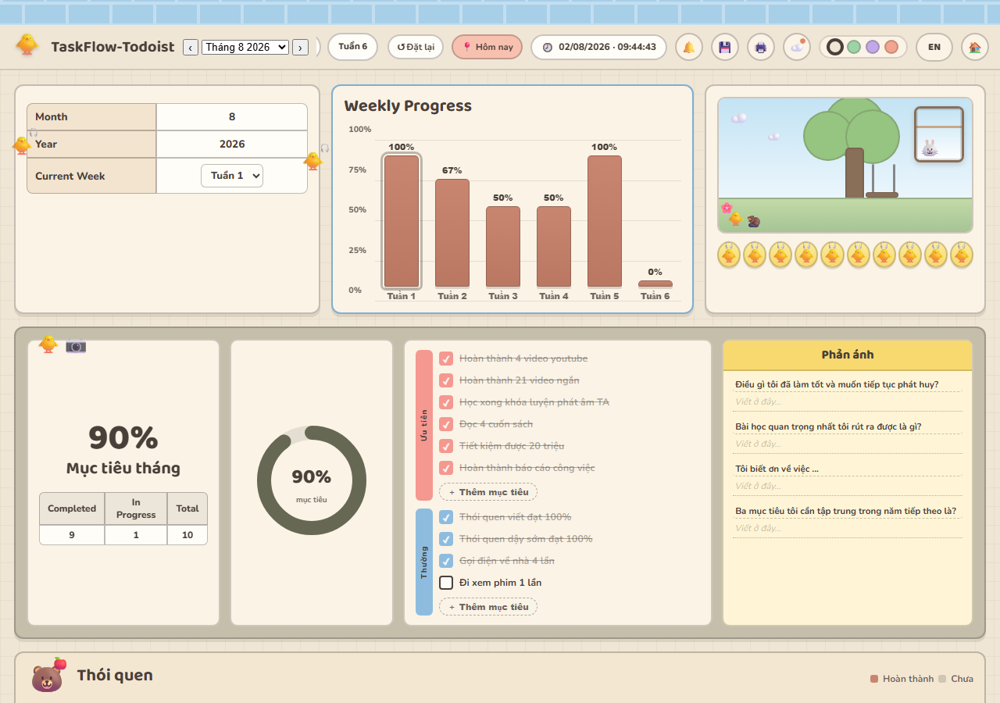

Mục tiêu 3 tầng
Chốt mục tiêu năm, chia nhỏ thành mục tiêu tháng và kế hoạch từng tuần — donut % hoàn thành cập nhật liên tục.
🎀 Miễn phí 100% · Không cần tài khoản · Offline
TaskFlow-Todoist giúp bạn chốt mục tiêu năm, theo dõi thói quen từng ngày với bảng 31 ngày + streak 🔥, quản lý checklist công việc và nhật ký reflection — trong giao diện pastel nhẹ nhàng, chạy 100% offline trên trình duyệt.
Chốt mục tiêu năm, chia nhỏ thành mục tiêu tháng và kế hoạch từng tuần — donut % hoàn thành cập nhật liên tục.
Bảng điểm danh mỗi ngày, tự tính % thực hiện, streak 🔥 hiện tại và chuỗi dài nhất 🏆, kèm heatmap xuyên tháng.
Mỗi ngày trong tuần có danh sách việc ưu tiên (priority) và việc phụ (regular) — tích ✓ là xong, kèm ghi chú nhanh.
Câu hỏi gợi nhớ cuối mỗi tuần, tháng và năm — dừng lại nhìn lại, điều chỉnh và tiến lên thay vì chạy mãi.
Sao lưu dữ liệu một chạm, xuất bảng CSV 7 section dán thẳng vào Google Sheets, hoặc in/Lưu PDF bản kế hoạch.
Cài đặt như app thật, dùng được khi không mạng; mở tùy chọn đồng bộ Supabase để thấy dữ liệu trên mọi thiết bị.
Mở app lần đầu sẽ có 3 bước hướng dẫn: chọn mục tiêu quan trọng nhất, khai 2 thói quen và chọn chủ đề màu.
Mỗi ngày tích ✓ vài ô thói quen, chốt checklist công việc — % và streak tự cập nhật, động lực tăng dần.
Cuối tuần/tháng/năm, trả lời vài câu hỏi reflection, điều chỉnh kế hoạch và lặp lại — như một nhật ký phát triển cá nhân.

Miễn phí, không tài khoản, không cần cài đặt — mở trình duyệt là chạy ngay.
🐥 Bắt đầu kế hoạch ngay